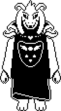

Asriel

Flowy absorbe el poder de todos los personajes y las seis almas humanas y se convierte en Asriel. En el
fondo sientes que puedes hacer algo para hacer que vuelva a la normalidad si hacerle daño.
Te das cuenta de que al salvar las almas de tus amigos, puedes salvar a Asriel.